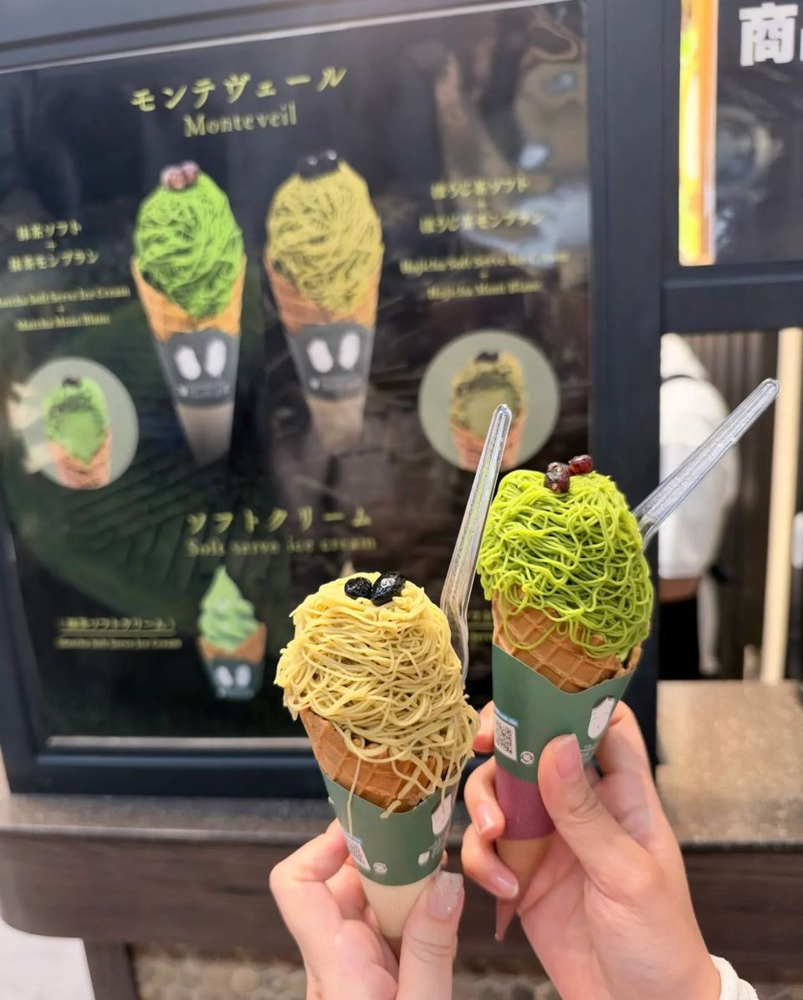
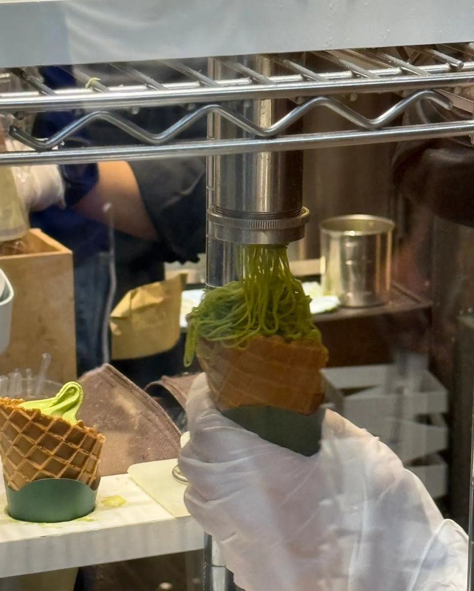
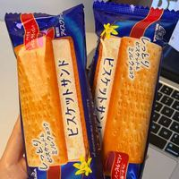
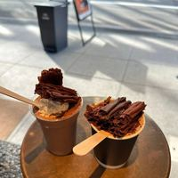
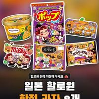
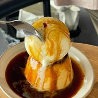

신사이바시 우지엔, 눈앞에서 뽑아 주는 말차·호지차 몽블랑
당고 먹으러 갔다가 홀린 듯이 산 몽블랑. 말차랑 호지차, 고르지 말고 둘 다 사세요!


당고 먹으러 갔다가
눈앞에서 몽블랑 실처럼 쭉쭉 뽑는 걸 구경하다
홀린 듯이 이거 사 먹었어요.
말차 vs 호지차
말차랑 호지차 둘 다 먹었는데, 고르지 마세요.
그냥 두 개 사세요!!
둘 다 맛있어서 합격 드림 🍵🤎
당고 먹으러 갔다가 홀린 듯이 산 몽블랑. 말차랑 호지차, 고르지 말고 둘 다 사세요!


당고 먹으러 갔다가
눈앞에서 몽블랑 실처럼 쭉쭉 뽑는 걸 구경하다
홀린 듯이 이거 사 먹었어요.
말차랑 호지차 둘 다 먹었는데, 고르지 마세요.
그냥 두 개 사세요!!
둘 다 맛있어서 합격 드림 🍵🤎
이 포스팅은 쿠팡 파트너스 활동의 일환으로, 이에 따른 일정액의 수수료를 제공받습니다.

일본 편의점에서 꼭 집는 아이스, 모리나가 비스켓샌드 화려하진 않은데 자꾸 생각나는 맛. 촉촉한 비스킷 + 바닐라빈 우유 아이스크림 조합!
초콜릿을 이렇게까지 쌓아 준다고? 오사카 Melt Chocolate 음료 위에 초콜릿을 얇게 갈아서 수북하게! 생초콜릿도 하나씩 골라 먹는 재미가 있어요.
산리오·포켓몬·디즈니까지, 일본 할로윈 한정 과자 8가지 캐릭터들이 전부 할로윈 옷을 입고 나왔어요. 패키지가 너무 귀여운 한정 과자 모음!
오사카 나카자키초 OSA COFFEE, 아이스크림 통째로 올린 꾸덕 푸딩 푸딩 위에 아이스크림을 통째로! 캐러멜은 살짝 쌉쌀하고 푸딩은 치즈케이크처럼 꾸덕해요.